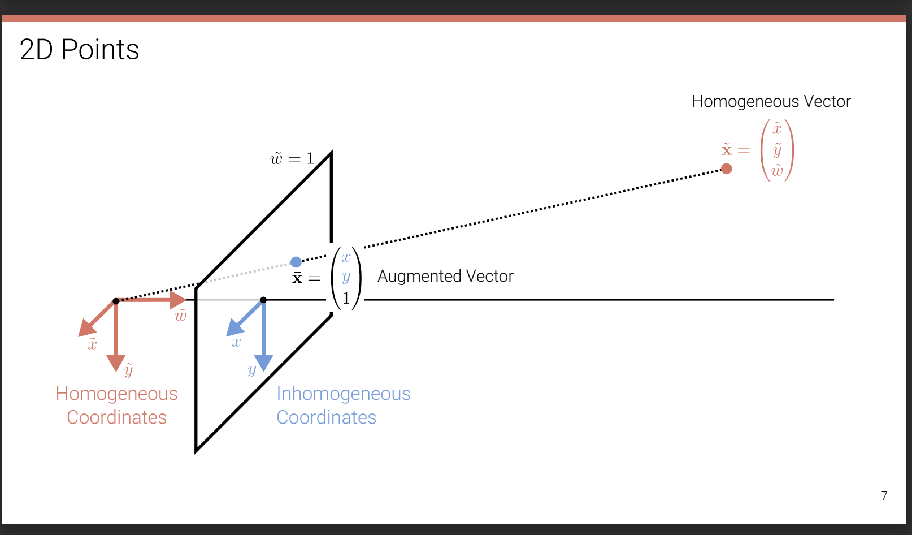
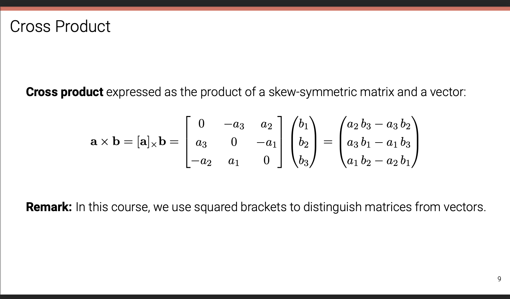
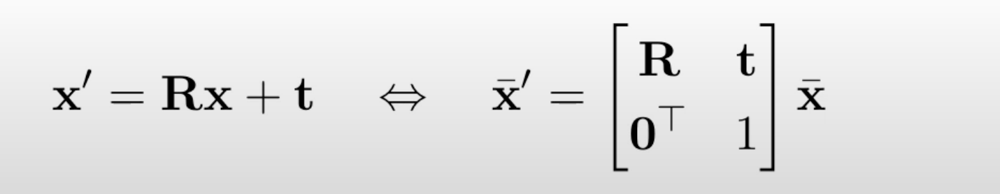
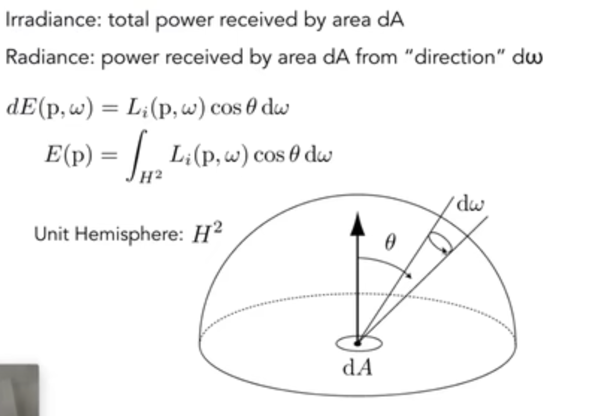
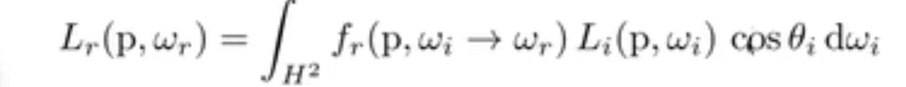
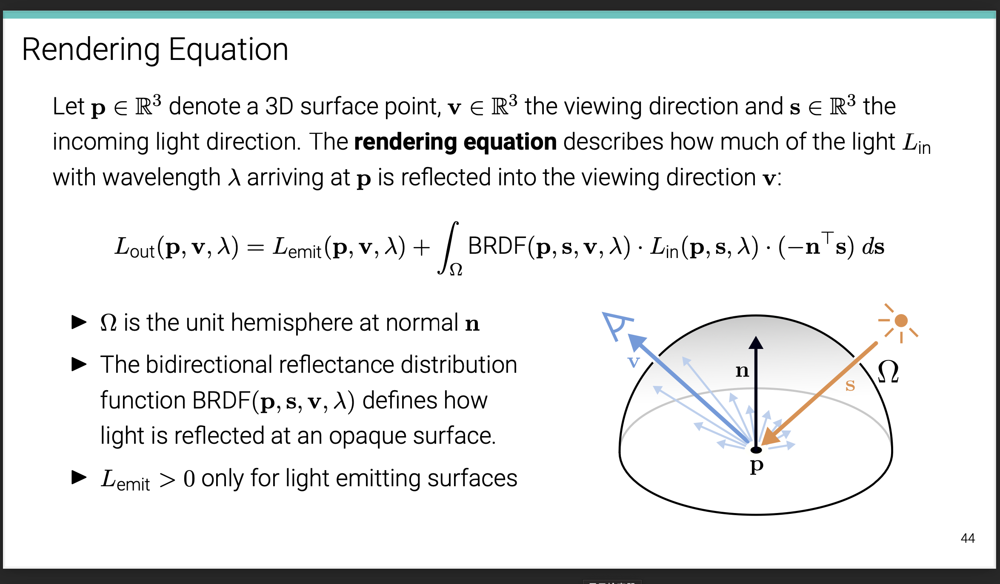
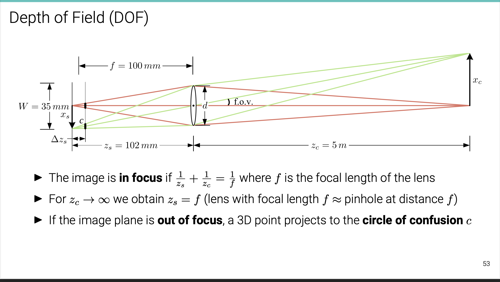

Lec2 for ML-4360¶
2.1 Primitives & Transformations¶
\(Homogeneous\)¶
- homogeneous coordinates & inhomogeneous coordinates
- argmented vector[one element out of the whole equivalent class],homogeneous vectors,homogeneous vectors
- points at infinity 
- In homogeneous coordinates, the intersection of two lines is given by:
\(\tilde{x}\)=\(\tilde{l1}\) × \(\tilde{l2}\) 
- the line joining two points can be compactly written as:
\(\tilde{l}\)=\(\tilde{x1}\) × \(\tilde{x2}\)
\(Transformations\)¶
- translation 2DOF
- Euclidean 3DOF \(RR^T=I \ der(R)=1\) 
- 正交矩阵\(A^TA=I\)
\(A^{-1}=A^T\)
\(\left|A\right|\) = +-1
A的行（列）向量组为n维单位正交向量组 * Similarity 4DOF * Affine: 6DOF arbitrary \(2×2\) matrix
Parallels Remain! * Projective :8DOF——preserve straight lines
DOF（2D）:n(n-1)/2

\(\tilde{l}'\) = \((\tilde{H}^T)^{-1}\)\(\tilde{l}\)
Direct Linear Transform for Homography Estimation[algorithm DLT¶
- UDV！ SVD!
2.2 Geometric Image Formation¶
Orthographic projection
Perspective projection
 * Complete perspective projection
* Complete perspective projection

lens distortion
- radial and tangential distortion
2.3 Photometric Image Formation¶
\(Rendering Equation\)¶
- intensity :power per solid angle
\(dw=\sin\theta\)\(d\theta\)\(d\phi\)
- Irradiance ： power per unit area
E(x)=d\(\Phi(x)\)/dA
- Radiannce
L(p,w)=\(d^2\Phi(p,\omega)\)/\(d\omega\)\(dAcos\theta\) 
\(BRDF\) "\(Radiance_{out}/Irradiance_{in}\)"¶
\(The Reflection Equation\)¶
 
Back To Cameras¶

\(Chromatic Aberration\)¶
2.4 Image Sensing Pipeline¶
最后更新:
2023年11月4日 10:47:52
创建日期: 2023年11月4日 10:47:52
创建日期: 2023年11月4日 10:47:52